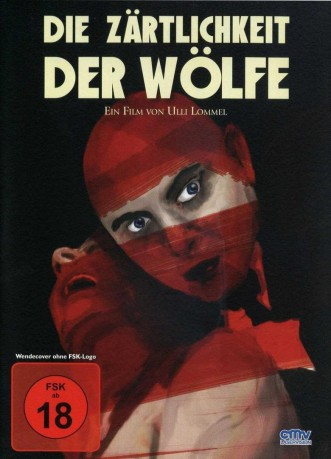

#8048 Die Zärtlichkeit der Wölfe
 
 IMDB-Wertung: 6.5 / 10
IMDB-Wertung: 6.5 / 10  Metascore: 0
Metascore: 0 
Bochum nach dem Zweiten Weltkrieg: Der ehemalige Metzger, Hausierer und Kleinkriminelle Fritz Haarmann arbeitet als Spitzel bei der Polizei. Niemand ahnt, dass er ein seit langem gesuchter Serienmörder ist, der über 20 junge Männer durch einen Biss in die Halsschlagader getötet und - so die Legende - zu Wurst verarbeitet hat. Erst als spielende Kinder Skelettteile finden, wird die Polizei aktiv...
Jahr: 1973
Dauer: 82 Minuten
FSK: 18
Land: West-Deutschland Studio: CMV LaservisionTonspuren:
Untertitel:
Auflösung: 1080p (1920x1080) Größe: 7833 MB
Genre: Thriller, Drama, Krimi
Regisseur: Ulli Lommel
Drehbuch: Kurt Raab
Soundtrack: Peer Raben
Darsteller:
 Kurt Raab als Insp. Fritz Haarmann
Kurt Raab als Insp. Fritz Haarmann Margit Carstensen als Frau Lindner
Margit Carstensen als Frau Lindner Ingrid Caven als Dora
Ingrid Caven als Dora Brigitte Mira als Louise Engel
Brigitte Mira als Louise Engel Rainer Werner Fassbinder als Wittowski
Rainer Werner Fassbinder als Wittowski El Hedi ben Salem als Französischer Soldat
El Hedi ben Salem als Französischer Soldat- Christoph Eichhorn als Badender
- Rosel Zech als Dame an der Tür
 Irm Hermann als Frau, die Kleider hergiebt
Irm Hermann als Frau, die Kleider hergiebt Jürgen Prochnow als Hehler
Jürgen Prochnow als Hehler Hans Hirschmüller als Fahrradkäufer
Hans Hirschmüller als Fahrradkäufer Rudolf Waldemar Brem als
Rudolf Waldemar Brem als - Peter Chatel als Karl Meier
- Joachim Preen als
- Jeff Roden als Hans Grans
- Wolfgang Schenck als Kommissar Braun
- Rainer Hauer als Kommissar Müller
- Barbara Bertram als Elli
 Heinrich Giskes als Lungis
Heinrich Giskes als Lungis- Friedrich Karl Praetorius als Kurt Fromm
- Karl von Liebezeit als Herr Engel
- Walter Kaltheuner als Schuhmacher
- Rainer Will als Opfer
- Inigo Natzel als Opfer
- Hans Tarantik als Opfer
- Johannes Wacker als Opfer
- Oliver Hirschmüller als Opfer
- Renate Grosser als Frau, die Kleider hergiebt
- Wolfgang Schneider als Hehler
- Tana Schanzara als Nachbarin
 Karl Scheydt als Polizei-Kommissar
Karl Scheydt als Polizei-Kommissar- Doris Mattes als Boy with blue hat (uncredited)
- Peer Raben als Vater (uncredited)
- Hannelore Tiefenbrunner als Frau Bucher (uncredited)
Datei: X:\FSK18-1900-1999\Zärtlichkeit der Wölfe, Die (1973, FSK18, 1920x1080).mkv seit 19.01.2018
Festplatte: FSK18
 Es gibt insgesamt 108 Filme in der Gruppe 'FSK18-1900-1999'
Es gibt insgesamt 108 Filme in der Gruppe 'FSK18-1900-1999'